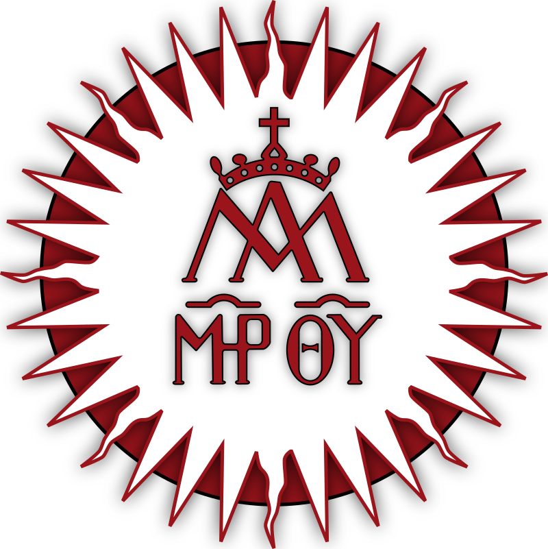

Uned - Examenes 1er y 2º Cuatrimestre 2011
UNED -Facultad de Geografía e Historía
UNED -VÍDEOS. GEOGRAFÍA FÍSICA
Instituto geografico nacional (ING) | Visualizador Terremotos Próximos
Instituto Geográfico Nacional (IGN) | Centro Nacional de Información Geográfica (CNIG)
Real Observatorio de Madrid - Instituto Geográfico Nacional Visitas
Edificio Villanueva: es el edificio principal del Observatorio, obra de Juan de Villanueva, consta de tres partes: Rotonda central donde se localiza el Péndulo de Foucault que ilustra la rotación diaria de la tierra y la colección de instrumentos, Círculo meridiano de Repsold (1854) y la espléndida biblioteca, con numerosos libros antiguos. Telescopio de Herschel: se puede admirar la réplica del Gran telescopio de William Herschell de 60 cm de diámetro y 25 pies de distancia focal, datado de 1796-98, y que fue destruido en 1808 durante la ocupación napoleónica.
Sala de las Ciencias de la Tierra y el Universo: incluye una maravillosa colección de instrumentos de Astronomía, Geodesia y Geofísica, de los siglos XIX y XX.
Instituto geografico nacional (ING) - mapas -Visor Iberpix
Instituto geografico nacional (ING) - mapas -Visor 3D
Visor del Mapa Histórico de España Meteosierra
Mapas IGME (Instituto Geológico y Minero de España): Cartografía geológica
El mapa que Carlos III prohibió por ser demasiado perfecto
El mapa que Carlos III prohibió por ser demasiado perfecto hermeneuta.es
Mapa América del Sur. Mapas generales. 1775 Instituto Geográfico Nacional
Mapa América del Sur. Mapas generales. 1775 son 70MB.
Cartográfico histórico de Madrid
Mapa de Madrid 1695
"Mantua Carpetanorum" de Gregorio Fosman y Medina
primera copia del plano de Pedro Texeira
Plano de Texeira (1656) ArcGIS activar en "Abrir en Map Viewer Classic"
El codo menguante de Pamplona
Comunidad de Madrid -Mapa de carreteras
Mapa Madrid normal con más detalles y aéreo
Mapa Madrid normal con más detalles y aéreo además por zonas, indica plantas
Visor del planeamiento urbanístico de Madrid
Visor geográfico Madrid con datos ampliados
Geoportal del Ayuntamiento de Madrid
OpenStreetMap
Visualizador Básico IDEE
Infraestructura de Datos Espaciales (IDE) - Consejo Superior Geográfico
Copernicus: Europe’s eyes on Earth
Atlas de Ptolomeo (ING) Hispania, Europa 2 pág. nº 10
El mapa de España más antiguo conocido, incluido en el
códice Urbinas Graecus 82 de la Geographia de Ptolomeo en griego.
Fuente: Biblioteca Apostólica Vaticana Folios 65v y 66r.
El mapa de España más antiguo conocido (en griego) mastervcs.edu.umh.es
Visor cartográfico militar de España
Biblioteca Digital Mundial
Biblioteca Apostolica Vaticana
Biblioteca Apostolica Vaticana
Instituto geografico nacional -Mapa Terremoto ALBATERA agosto2018
Universidad Oviedo -Cartografía-Mapas
Cartografía Geológica UNED
Móstoles -vista satelite completa
Catastro -Consulta de Datos Catastrales
Catastro -busqueda
Visor Cartográfico
Visor Ortocartográfico
Earth wind map -Mapa actual vientos terrestre ortográfico
Descifrando una Rosa de los Vientos
Catastro+Google maps -busqueda -goolzoom.com
Ministerio Agricultura -visor parcelas agricolas
Climas
Perihelio
La corriente del Atlántico Norte
Solsticio de invierno
¿Por qué las semanas tienen siete días?
La reforma del calendario juliano y el informe de la Universidad de Salamanca de 1515
Alicante Cota Cero de España
Cota Cero de España esta en Alicante
Hora Zulú
Alfabeto NATO
Geografiainfinita.com -geografia de España
El primer mapa orlado de la Península Ibérica
Digital Atlas of the Roman Empire interactivo
Digital Atlas of the Roman Empire [DARE] no interactivo University of Gothenburg, Sweden
Mapas historicos
Mapas historicos (España)
David Rumsey Historical Map Collection
Viento de poniente | Los vientos del Mediterráneo
Mapa Google - Coordenadas GPS, Google Maps
Geolocalizacion Maps. Ejemplo 34° 34' 13.85" w 58° 29' 7.80"
Astronomía
Satelites a simple vista desde casa
Noche polar
Sol de medianoche
Astronomía -Español -heavens-above.com
Stellarium Astronomy Software
Sky Map - Planetario Android. Estrellas, planetas, nebulosas y más.
Centro Espacial
AstroRED -Astronomía en español
Apuntes
Apuntes21.com
El Portal del Opositor
Rincon del vago
Monografias.com
Wikipedia.org- español
Aula Virtual. Cursos y Tutoriales gratuitos CoMadrid
AulaClic Cursos de Informática gratis
AulaFácil - Curso Grátis On-line
Infocurso.com/
Mipasado.com -antiguos compañeros estudios
Biologia
Bornet -revista cientifica
Ciencianet.com
Genciencia.com
El Castellano.com
Escolares.net
Juvenilweb.com
Instituto Cervantes
Cursos Mentor (verlo en IE)
Educa Madrid
• Educacion:
Ministerio Educación y Cultura -sede electronica
Ministerio de Educación y Formación Profesional
Trámites y servicios de Educación - Ministerio de Educación y Formación Profesional
Registro usuario - Ministerio de Educación y Formación Profesional
Becas para el estudio de Formación Profesional de Grado Superior (2022-2023)
Colegio donde estudie EGB.:
Centro Sociocultural Blasco Ibáñez | c/ Soldado Jose Maria Rey 44
ARCHIVO REGIONAL DE LA COMUNIDAD DE MADRID | Colegio San Francisco Javier
Archivos de la Comunidad de Madrid
Matemáticas
Teorema de Pitágoras – MatematicasCercanas
MatematicasCercanas.com
Libro II - Los Elementos | Descúbrelo en Euclides.org
Las matematicas.es video acceso 25 años
Matemáticas y sus fronteras | madridmasd.org
Mathematical.blog
Matematicas -libros descarga
Instituto Nacional de Tecnologías Educativas y de Formación del Profesorado (INTEF)
10 trucos de aritmética sencillos para impresionar a tus amigos – Marcianos
Conversor de números romanos -calcuonline.com
Conversor de números romanos -es.calcuworld.com
Los ingeniosos números que se usaron en Europa | números cistercienses
El Hombre que Calculaba: Malba Tahan
Matemáticas: aprender nunca había sido tan fácil | Smartick
Universidad Alfonso X El Sabio: Universidad Privada en Madrid - UAX DANI
Wifi Universidades Eduroam como conectarse
UNED.es
Tlf.: 913 987 656 sede central
alumnos.acceso@adm.uned.es
Centro Asociado a la UNED en Madrid - Escuelas Pías
Microgrado en Historia de España de la Uned
UNED -contactos telefonicos
UNED -Facultad Geografia
UNED -acceso campus
UNED -Aula virtual
UNED -curso acceso +25 años
UNED -Centro de Zona Móstoles
UNED - Examenes acceso años anteriores UNED
UNED -CanalUned -radio y Television
UNED -Programación de radio
UNED -Examenes años anteriores
UNED -Solucion examenes 2009
UNED -Cuadernos evaluacion
UNED -Valija Virtual -user y pass:DNI sin letra
UNED -Cursos en Abierto UNED
UNED -VÍDEOS. GEOGRAFÍA FÍSICA
UNED -Facultad Geografia
UNED asignaturas
Carreras-uned.com
Libros segunda mano UNED
tenéis audios y vídeos de las tutorías del centro asociado de Sevilla Matematicas CAD UNED -videos y sonidos
Universitas.tv -guia orientacion Universitaria
Comunae.com -info
Universia.es -info
Universitarios.org
Universidad Juan carlos I
Universidad Carlos III
Universitat Politecnica de Madrid
Universidad Autónoma de Madrid
Universidad Complutense de Madrid
Uned.es EEES -plan Bolonia
Correctorortografico.com
Contadordecaracteres.com
Literatura | Historia | Ortografía
epublibre.org -download libros electrónicos
Pagina Fonetica curso Lengua UNED
Gramática practicaespanol.com
Dudas o curiosidades ortográficas
Glosario de términos gramaticales | GTG RAE
Nueva gramática de la lengua española (NGLE) RAE
Ortografía de la lengua española (OLE) RAE
Tiempos verbales del modo subjuntivo
Glosario de términos gramaticales | GTG RAE online
Nueva gramática de la lengua española (NGLE) RAE
Nueva gramática de la lengua española (NGLE) RAE online
Ortografía de la lengua española (OLE) RAE
Ortografía de la lengua española (OLE) RAE online
Insultos que se usaban en el Siglo de Oro español
Insultos RAROS
Expresiones o insultos típicos españoles
Las 20 palabras más bonitas del idioma español
40 de las más bellas palabras del castellano. ¿Están vuestras favoritas?
1de3-origen de palabras,frases hechas,tradiciones
Técnicas de Lectura Rápida
Aprender a pensar
Dialéctica erística o el arte de tener razón
Tecnicas de Lectura -aeg.es
Expresiones latinas
Locuciones latinas.: página mia
Jergasdehablahispana.org
Dialecto manchego
Insultos de José Mota
El Bienhablao: Repertorio de vocablos (La Manchuela)
Creencias y Costumbres Populares (Campo de Montiel)
El Cartulario de Valpuesta| las Glosas Emilianenses | Nodicia de Kesos del frater Semeno del siglo X, son considerados los textos escritos en castellano más antiguos
Las Glosas Emilianenses no son la cuna del castellano
Las Glosas Emilianenses no son la cuna del castellano 2
Las Glosas Emilianenses: las polémicas huellas del primer texto en castellano no son la cuna del castellano
Cantar de mio Cid | El Códice de Vivar (1200 cantar de gesta anónimo
Episodios cidianos representativos de toda la trayectoria del héroe el Cid
Isidoro de Sevilla Etimologías (hacia 634)
Isidoro de Sevilla Primera enciclopedia o base de datos de la Historia | Patrono Internet
Códice Calixtino (1140-1181) manuscrito iluminado texto más antiguo del
Liber Sancti Iacobi
El Beato de Liébana (c. 730-781? monje que se dedicó a escribir manuscritos. Su obra más conocida es el Comentario al Apocalipsis de San Juan (Commentarium in Apocalypsin)
Antonio de Nebrija (1444-1522) autor de la primera gramática castellana 1492
Antonio de Nebrija (1444-1522) Vocabulario Español-Latino de Nebrija en 1494-1495
Primera gramática castellana 1492
Alfonso de Palencia Primer Diccionario Español-Latino 1492
Los Beatos los distintos códices manuscritos por el Beato de Liébana
Incunable libro impreso durante el siglo XV, antes día de Pascua de 1501
Sinodal de Aguilafuente (1472) primer libro (incunable) impreso en España y en español
Libro de horas | horarium manuscrito iluminado muy común en la Edad Media
Los libros de horas, las lujosas agendas religiosas de la Edad Media
Salterio (libro de salmos)
Manuscrito ilustrado o Manuscrito iluminado manuscrito decorado con oro o plata
Salterio (libro de salmos)
Libro de horas | horarium manuscrito iluminado muy común en la Edad Media
Los libros de horas, las lujosas agendas religiosas de la Edad Media
Horas canónicas parte fija del Oficio Divino que designa la Iglesia para ser recitada a horas diferentes
Horas canónicas hay siete horas canónicas diurnas (laudes, prima, tercia, sexta, nona, vísperas y completas) y tres nocturnas, que reciben el nombre de maitines
Salterio (libro de salmos)
Manuscrito ilustrado o Manuscrito iluminado manuscrito decorado con oro o plata
Desiderátum Deseo o aspiración que aún no se ha cumplido.
Haters usuarios red que difaman, desprecian o critican destructivamente algo o alguien
Hipster Qué significa, origen, concepto y características
Hipster (inconformista) Como serlo
¿Qué es un normie? gente común y sin nada especial, siguen modas
Galaxia Carabanchel, los artistas transforman un barrio obrero de Madrid a golpe de talento
verlo en Firefox con F8/modo lectura
Así rechazó la RAE a María Moliner (con zancadilla incluida de Camilo José Cela)
Hipérbole exagerar cantidades, cualidades, características, costumbre, personas, lugares
Epígono Persona que sigue las huellas de otra, una escuela o un estilo generación anterior
Hiperbatón
Aforismo Frase o sentencia breve y doctrinal que se propone como regla en alguna ciencia o arte
Pleonasmo
Sinécdoque
Sinécdoque RAE
Paráfrasis
Misantropía aversión general al género humano
Sicalíptico Erótico, sensual, libidinoso
Epítome Resumen o sumario de una obra extensa
¿Crush?, ¿Cringe?, ¿Hype? Diccionario para hablar con la Generación Z
Francisco de Quevedo, la culta latiniparla: catecisma de vocablos para instruir a las mujeres cultas y hembrilatinas
Los ataques machistas de Quevedo a un grupo de mujeres cultas de su época
Obras completas de Don Francisco de Quevedo Villegas
Quevedo censurado: la denuncia que forzó la reescritura de Política de Dios
Quevedo: un hombre de contrastes
Curso ortografia reglas gramaticales
"A ver si" o "Haber si"
Sino o si no RAE
Sino o si no
"asimismo"-"asi-mismo"-"a-si-mismo"
"Queísmo" y el "dequeísmo"
Origen del leísmo, del laísmo y del loísmo ? delcastellano.com
Test sobre laísmo, leísmo y loísmo: ¿lo aprobarás o le suspenderás?
Morfología y sintaxis
Diptongos, triptongos, hiatos y sus acentuaciones
"porqué, porque, por qué y por que" rae.es
Hala | Hale rae.es
Pergeñar Disponer o ejecutar algo con más o menos habilidad
Anacrónico Que no es propio de la época de la que se trata.
extemporáneo, impropio, inadecuado, improcedente.
Las adulteras sin tilde
Elcastellano.org -Gramatica
Lenguaje no sexista - Wikipedia
Lenguas y variedades de España
Etimologías @EtimosDirectos Etimologías, curiosidades y más de las lenguas y su historia
Sintasix -oraciones simples y compuestas
Sintaxis -sujeto , predicado , grupos
Acentuación gráfica
Acentuación gráfica | Firuletes
Diferencias entre «bimensual», «bimestral», «bienal» y «bianual»
5 claves para usar bien los puntos, comas, comillas y punto y coma - SinFaltas.com
Anacoluto o solecismo inconsistencia gramática -pilarroman.com
Anacoluto o solecismo inconsistencia gramática wikipedia.org
El movimiento que quiere traer de vuelta los signos ortográficos perdidos
Fortunata y Jacinta, de Benito Pérez Galdós – Marea Literaria
Fortunata y Jacinta - Capítulo 1 - RTVE.es
Lista de películas basadas en la literatura española desde 1986 a 2010
Ramón Menéndez Pidal (1869-1968) filólogo, historiador, folclorista y medievalista. Generación 98
Masonería.:
Historia de la filosofía occidental
Historia de la Filosofía: principales filósofos
Historia de la Filosofía
Filosofía en blog: blog de filosofía
Filosofia.org
Paginasobrefilosofia.com
Filosofía & Co. Tu portal de Filosofía, Pensamiento y Cultura
La filosofía en la Grecia helenística
Filosofía presocrática
Los Presocráticos | Serie Documental -youtube
Los Presocráticos | Serie Documental -meneame.net
Historia de la Filosofia | La filosofía de los presocráticos
Anaxágoras 500 - 428 a. C. | filósofo presocrático
Método socrático o debate socrático es un método de dialéctica o demostración lógica
Filosofía y psicología lamenteesmaravillosa.com
La lista de reproducción de Darin McNabb -pensamiento crítico
El pensamiento crítico en menéame I. Fundamentos y orígenes del conocimiento
El pensamiento crítico en menéame II. Fundamentos y orígenes del conocimiento
El perro de Pavlov | Condicionamiento clásico | Condicionamiento pavlovliano
¿Qué es el amor? Una perspectiva diferente
Federalismo -¿Qué es un estado federal?
República romana
Exónimo
Oprobio | Ignominia sentimiento de deshonra, afrenta
Oprobio | Opprobrium
Epónimo persona o lugar cuyo nombre es usado para nombrar a un pueblo, concepto u objeto
Dantesco epónimo, que causa espanto u horror
Kafkiano epónimo, proceso burocrático imposible de resolver
Orwelliano epónimo, utiliza el lenguaje de manera engañosa y manipuladora
Rocambolesco epónimo, situación extraña o inverosímil
Mefistofélico epónimo, persona malvada, pacto con el diablol
Pantagruélico epónimo, banquetes abundantes y excesivos
Maquiavélico epónimo, actúa con astucia y perfidia para conseguir sus propósitos
Sádico epónimo, aquella que siente placer cuando es cruel e inflige dolor en otras
Diégesis El mundo (ficticio) donde ocurren las situaciones y acontecimientos narrados
Mimesis la imitación de la naturaleza como fin esencial del arte
Falacia
Falacia Las veinte falacias lógicas más comunes:
Falacia Los 10 tipos de falacias lógicas y argumentativas
Falacia Los 14 tipos de falacias lógicas y argumentativas
Falacia de evidencia incompleta | Cherry picking (‘recolectar cerezas’) seleccionar lo mejor de algo
Quaternio terminorum | falacia de cuatro términos o error de cuatro términos
Argumento ad hominem
Argumento ad populum
Argumento ad antiquitatem
Argumento ad verecundiam argumento autoridad o magister dixit [falacia de Pitágoras]
reductio ad Hitlerum (reducción a Hitler) argumentum ad Hitlerum o argumentum ad nazium
falacia del tipo ad hominem en la forma: «Adolf Hitler apoyaba X, por lo tanto X debe ser malo»
Reductio ad Stalinum (Reducción a Stalin) ad Leninum, ad Maum o ad Castrum
Es similar a la falacia reductio ad Hitlerum pero orientada hacia la izquierda política
Ley de Godwin o regla de analogías nazis de Godwin
A medida que una discusión en línea se alarga, la probabilidad de que aparezca una comparación en la que se mencione a Hitler o a los nazis tiende a uno.
Non sequitur (argumento)
Non sequitur (figura literaria)
Descartes «cogito ergo sum» traducido en español como «Pienso luego existo»
Descartes Discurso del método
El sueño de Descartes (o cómo la ciencia moderna fue fundada por un ángel)
Anfibología Ambiguedad -empleo de frases o palabras con más de una interpretación
Polisemia misma palabra o signo lingüístico tiene varias acepciones
Disemia misma palabra o signo lingüístico dos acepciones
Sofista
Gorgias (de Leontinos) . 460 a. C.-c. 380 a. C. | filósofo sofista y maestro de la retórica
Ironía Sócrates
Laconismo el origen espartano de una forma de expresión
Isonomía -Concepto de igualdad de derechos civiles
Anaciclosis y votaciones hispanovenezolanas
Anaciclosis -sucesión cíclica de regímenes políticos
Temístocles | c. 525 - 460 a. C. fue un político y general ateniense
Lógica aristotélica
Lógica Demostración, inferencia válida, las falacias, las paradojas y la noción de verdad
Los silogismos según Aristóteles
Silogismo
Silogismo
Entimema | silogismo truncado
La elipsis
Resiliencia capacidad de superar un trauma o una situación dolorosa
Resiliencia es.wikipedia
Némesis Venganza
Gatopardismo filosofía de quienes piensan que es preciso que algo cambie para que todo siga igual. El efecto Lampedusa
Inferencia bayesiana o cómo aprender a tomar decisiones más inteligentes
Panóptico tipo de arquitectura carcelaria ideada por el filósofo utilitarista Jeremy Bentham hacia fines del siglo XVIII
El filósofo e historiador Michel Foucault, en su obra Vigilar y castigar (1975), estudió el modelo abstracto de una sociedad disciplinaria, inaugurando una larga serie de estudios sobre el dispositivo panóptico. «La moral reformada, la salud preservada, la industria vigorizada, la instrucción difundida, los cargos públicos disminuidos, la economía fortificada, todo gracias a una simple idea arquitectónica».
Navaja de Ockham la sencillez de lo material frente al complejo mundo de las ideas de Platón
Navaja de Ockham principio de economía o principio de parsimonia (lex parsimoniae)
Misantropía actitud social y psicológica caracterizada por la aversión general al género humano
Filantropía amor a los seres humanos. -antónimo de Misantropía
Oligarquía forma de gobierno en manos de unas pocas personas de la misma clase social
Listado de Figuras Retóricas
Retóricas: Figura Retórica de Dubitación
Retórica
Gorgias (de Leontinos) . 460 a. C.-c. 380 a. C. | filósofo sofista y maestro de la retórica
Relativismo
Hiperbórea inmortales, además de ser descritos como dioses
Procrastinación
Epicteto el gran filósofo estoico de la no-preocupación
Estoicismo [Zenón]
Estoicismo [Zenón] el pensamiento de Séneca, Marco Aurelio un poco más asequible que el de Heidegger, Kant o Leibniz
Epicureismo [Epicuro]
Escepticismo [Pirrón de Élide]
Escepticismo doctrina que duda información que no sea bien apoyada por la evidencia
Escuela cínica Menipo de Gadara escritor griego creador "sátira menipea"
Hiparquía, la cínica filósofa y matemática griega
Esencia cínica Diógenes de Sínope
Esencia cínica Diógenes de Sínope | Filosofía & co.
Filosofía cínica fundada en la segunda mitad del siglo por Antístenes | doctrina socrática
Filosofía cínica Diógenes de Sínope , el primer cínico de la historia
Ironía | Sócrates
Epistemología
Empirismo
Racionalismo -Descartes
Humanismo renacentista
Hiperbatón
Aforismo Frase o sentencia breve y doctrinal que se propone como regla en alguna ciencia o arte
Pleonasmo
Sinécdoque
Sinécdoque RAE
Paráfrasis
Misantropía aversión general al género humano
Sicalíptico Erótico, sensual, libidinoso
Epítome Resumen o sumario de una obra extensa
La leyenda de Creso y la errónea búsqueda de superioridad
Gato de Schrödinger es un experimento mental, a veces descrito como una paradoja
Escalera de Penrose conocida también como "escalera infinita" o "imposible", es una ilusión óptica
Escalera de Escher (Escalera de Penrose)
¿Hace ruido un árbol al caer si nadie está ahí para escucharlo?
Guy Fawkes | V de Vendetta su mascara es un símbolo de revolución y desobediencia civil
Reglas del marqués de Queensberry Juego limpio
Qué es exactamente el movimiento woke y de dónde proviene
woke La frase «stay woke» («mantente despierto») surgió en EE.UU. en la década de 1930
La comunidad incel el último reducto del patriarcado y la misoginia
los incels se dividen en tres ramas principales: bluepill, redpill y blackpill
pill (píldora) dos píldoras: la roja o la azul La primera representa un futuro incierto y el conocimiento de una verdad potencialmente inquietante, mientras que la segunda permite continuar viviendo en una ignorancia satisfecha, una especie de cárcel placentera.
redpill, manosphere
alfa, chad (-aquellos que son sexualmente activos)
aliades, manginas u hombroños (hombres feministas) | Stacys o charos (mujeres)
TDS PTS (todas putas) | awalt (todas son iguales)
“¡La rebelión incel ya ha comenzado! ¡Derrotaremos a los Chad y a las Stacy! ¡Honra al Supremo Caballero Elliot Rodger!”.
La comunidad incel | celibato involuntario el último reducto del patriarcado y la misoginia en el basurero de Internet
manosphere | Manosfera
Incel es la abreviatura de involuntary celibate (célibe involuntario) y describe a alguien, normalmente varón, que se siente frustrado por su falta de experiencias sexuales
Manosfera: diccionario de personajes tóxicos
Red pill | Incel y otros conceptos clave de la llamada manosfera
El diario erótico de Girolamo El intelectual italiano dejó por escrito, con todo lujo de detalles, el testimonio de su vida licenciosa durante su estancia en Salamanca a principios del siglo XVII
Teoría de las ventanas rotas psicología /criminología
Las 110 mejores frases de Sun Tzu (El Arte de la Guerra) psicología
Corazón con los dedos o corazón coreano, japonés
Hans Jonas. ´Gnosticismo, existencialismo y nihilismo´
Nietzsche Frases célebres: -biografia
Nietzsche "El sexo es una trampa de la naturaleza para no extinguirnos": 101 frases que resumen su filosofía
Nietzsche cada acción es un experimento y no importa demasiado que resulte en éxito o en fracaso, porque lo que se busca es simplemente un resultado. Es decir, información sobre si tal cosa funciona o no funciona.
Nietzsche Presentación de Más allá del bien y del mal de
Nietzsche ¿Era Nietzsche afín al nazismo? El concepto del ‘superhombre’
Nietzsche Lo apolíneo y lo dionisíaco
Heidegger y el nazismo
Heidegger (1889-1976) pensador y filósofo alemán más importante del siglo xx
Fenomenología y filosofía europea contemporánea, en campos como la arquitectura, la crítica literaria, la teología y las ciencias cognitivas
Edmund Husserl (1859-1938) filósofo y matemático alemán
discípulo de Franz Brentano y Carl Stumpf, fundador de la fenomenología trascendental
Erasmo de Róterdam (1466-1536) filósofo humanista, filólogo y teólogo cristiano neerlandés
considerado como uno de los más grandes eruditos del Renacimiento nórdico.
Como sacerdote católico, Erasmo fue una figura importante en la erudición clásica que escribió nuevas ediciones latinas y griegas del Nuevo Testamento que plantearon cuestiones que serían influyentes en la Reforma protestante y la Contrarreforma
Vivió en el contexto de la creciente reforma religiosa europea. Si bien criticó los abusos dentro de la Iglesia Católica y pidió una reforma, se mantuvo alejado de Lutero, Enrique VIII y Juan Calvino y continuó reconociendo la autoridad del Papa.
Teoría egológica del derecho
Unamuno y la Iglesia Católica: reacción crítica. Unamuno.: «Resentimiento trágico de la vida. Notas sobre la revolución y la guerra civil españolas» En sus cartas a Quintín Torre habla extensamente sobre las dos Españas:
«los hunos y los hotros están ensangrentando, desangrando, arruinando, envenenando y entonteciendo a España».
Es un «suicidio moral» y una «locura colectiva»
«no hay nada peor que el maridaje de la mentalidad de cuartel con la sacristía»
La última carta a Quintín.: Torre fechada el 13 de diciembre contiene quejas contra Mola, Martínez Anido y los falangistas:
«Vencerán, pero no convencerán, conquistarán pero no convertirán», «no son civiles... sino africanos... ni menos son cristianos. Porque el grosero catolicismo tradicionalista español apenas tiene nada de cristiano»
Ontología o metafísica general es la rama de la filosofía que estudia lo que hay, así como las relaciones entre los entes (por ejemplo, la relación entre un universal —como el rojo— y un particular que lo "tiene" —como una manzana) o la relación entre un acto (como el que Sócrates bebiera la cicuta) y sus participantes (Sócrates y la cicuta)
Antitético | Antitesis
Immanuel Kant
Kant Crítica de la razón pura
Kant Criticismo kantiano
Kant 10 claves para entender la filosofía de Immanuel Kant
Georg Wilhelm Friedrich Hegel -filósofo alemán
Karl Von Hegel -filósofo alemán hijo de Friedrich Hegel
El 18 Brumario de Luis Bonaparte | Karl Marx
"La historia ocurre dos veces: la primera vez como una gran tragedia y la segunda como una miserable farsa".
Karl Marx (complemento a la frase original formulada por Hegel.: la historia ocurre primero como contingencia, y luego como necesidad)
parodiando de esta forma el golpe de Estado del 2 de diciembre de 1851 en París dado por Luis Napoleón Bonaparte
fue propiciado por la lucha de clases y las condiciones materiales que cada una de las clases sociales defendía
ArthurSchopenhauer -filósofo alemán del idealismo occidental y del pesimismo profundo
Johann Wolfgang Von Goethe -Romanticismo, movimiento
Diez frases geniales de Goethe
Marcel Proust (1871-1922) un novelista, ensayista y crítico francés
Marcel Proust (1871-1922) El secreto de la magdalena de Proust
Kierkegaard (1813-1855) filósofo y teólogo danés, considerado el padre del existencialismo
Kierkegaard (1813-1855) La angustia existencial
Descartes «cogito ergo sum» traducido en español como «Pienso luego existo»
Descartes Discurso del método
El sueño de Descartes (o cómo la ciencia moderna fue fundada por un ángel)
René Descartes
Jean-Jacques Rousseau -escritor, filósofo, músico franco-helvético definido como ilustrado
Dualismo doctrina que afirma la posible existencia de dos principios supremos
Yin y yang dualidad filosofía del taoísmo que atribuye a todo lo existente en el universo
Grecia
Aristóteles -wikipedia.org
Aristóteles -historiaeweb.com
Lógica aristotélica
Alejandro Magno y Aristóteles: cuando el alumno corrigió al maestro
Así nació la primera democracia en Atenas: las claves de una revolución hace 2.500 años
Clístenes (de Atenas) 570 a. C.-507 a. C. | padre de la Democracia
obras de Sófocles
las grandes tragedias de Eurípides
las magníficas esculturas de Fidias...
el estadista Pericles,
los filósofos Sócrates, Platón y Aristóteles,
los historiadores Tucídides y Jenofonte,
el comediógrafo Aristófanes
ilustres extranjeros como Heródoto, el padre de la Historia,
Anaxágoras, a quien puede colocarse entre los primeros científicos
Gorgias, gran sofista y maestro de la retórica.
el legislador Clístenes
la construcción de la flota por la que Temístocles argumentó en la Asamblea
La tragedia griega: vida y obra de Esquilo, Sófocles y Eurípides
Sófocles 496 a. C. - 406 a. | poeta trágico griego | Autor Antígona y Edipo rey
Eurípides ca. 484/480 a. C. - 406 a. C. | poeta trágico griego
Esquilo a. 526-525 a. C. - ca. 456-455 a. C. | poeta trágico griego
Fidias a. 526-525 a. C. - ca. 456-455 a. C. | poeta trágico griego
Esquilo hacia 500 a. C. - h. 431 a. C. | escultor de la Antigua Grecia
Pericles c. 495 a. C.- 429 a. C. | abogado, magistrado, general, político y orador ateniense
Fidias a. 526-525 a. C. - ca. 456-455 a. C. | poeta trágico griego
Tucídides c. 460 a. C. - Tracia, c. ¿396 a. C.? | historiador y militar ateniense
Jenofonte ca. 431 a. C.-354 a. C. | historiador, militar y filósofo
Aristófanes 444 a. C.-ibidem, 385 a. C. | historiador, militar y filósofo
Ibidem «en el mismo lugar» que ya fue declarada en la cita previa
Heródoto entre 484 y 425 a. C. | historiador y geógrafo griego padre de la Historia
Anaxágoras 500 - 428 a. C. | filósofo presocrático
Gorgias (de Leontinos) 460 a. C.-c. 380 a. C. | filósofo sofista y maestro de la retórica
Clístenes (de Atenas) 570 a. C.-507 a. C. | padre de la Democracia
Éfeso localidad del Asia Menor, en la actual Turquía
Éfeso El Templo de Artemisa, considerado una de las siete maravillas del mundo antiguo
Pericles (c. 495 a. C.- 429 a. C.) -orador ateniense
Pericles (c. 495 a. C.- 429 a. C.) -Acrópolis de Atenas con el Partenón, dedicado a Atenea
Siglo de Pericles período de la historia de Atenas dentro del siglo V a. C.
Reino de Macedonia - Estado griego antigüedad clásica y de la helenística
Tebas (Grecia) - Ciudad-estado (polis) griega
Tebas (Egipto) - Capital de Egipto durante el Reino Medio y el Nuevo Reino
Peloponeso - Península de Grecia
Guerra del Peloponeso (431 a. C.-404 a. C.) enfrentó ciudades Atenas y Esparta
Atenas (508 a. C.-322 a. C.) - Ciudad-estado (polis) Fue la ciudad principal de la antigua Grecia durante el I milenio a. C
Esparta - Ciudad-estado (polis) capital Laconia
Corinto - Ciudad-estado (polis) ubicada en el istmo de Corinto
Plutarco (c. 46 - c. 120) - Historiador, biógrafo y filósofo moralista griego
Cálamo caña hueca de planta o pluma de ave, usada antiguedad para escribir
Platón -filósofo griego clásico
Sócrates -filósofo griego clásico ateniense
Sócrates contra Plátón [Karl Popper]
Sócrates y Protágoras | debate Democracia
Antístenes primero de los discípulos de Sócrates filosofía cínica
Menipo de Gadara escritor griego creador "sátira menipea" Escuela cínica
Hiparquía, la cínica filósofa y matemática griega
Diógenes de Sínope Esencia cínica
Diógenes de Sínope Esencia cínica -Filosofía & co.
Parménides de Elea -filósofo presocrático
Pitágoras filósofo y matemático griego
Hiparquía, la cínica filósofa y matemática griega
Demóstenes el gran orador tartamudo
Demóstenes Uno de los oradores más relevantes de la historia e importante político
Demócrito filósofo y matemático griego «el filósofo que ríe»
Menipo de Gadara filósofo de la escuela cínica y escritor griego creador "sátira menipea"
Hiparquía, la cínica filósofa y matemática griega
Sócrates | Ironía
Empédocles filósofo presocrático de la antigua Grecia
Empédocles postuló que eran cuatro los principios materiales de la realidad y que se hallaban en constante movimiento, mezclándose y repulsándose por las fuerzas espirituales del Amor y el Odio. Estos eran los elementos propuestos por Tales de Mileto Anaxímenes Heráclito y Jenófanes: agua, aire, fuego y tierra respectivamente.
Tales de Mileto filósofo, científico y sabio
Anaxímenes filosofo presocrático | escuela de Mileto
Heráclito filosofo presocrático griego
Jenófanes de Colofón poeta elegíaco y filósofo griego
Epígonos En mitología griega los hijos de los héroes argivos que lucharon y murieron en la primera guerra tebana.
Conócete a ti mismo estaba inscrito en el pronaos del templo de Apolo en Delfos
"Conócete a ti mismo" En latín, el aforismo es temet nosce o bien nosce te ipsum
Templo de Apolo (Delfos)
Oráculo de Delfos
Cerbero | Kerberos El monstruoso can era hijo de Equidna y Tifón, y guardaba la puerta del reino de Hades (el inframundo griego) y aseguraba que los muertos no salieran y que los vivos no pudieran entrar.
Óbolo de Caronte la moneda colocada en o sobre la boca de una persona muerta antes de su entierro
Religión.:
Santísima Trinidad
Gnosticismo gnosticismo cristiano, pagano en sus raíces representante de su tradición más pura
Agnosticismo filosofía rechaza todas las declaraciones de conocimiento espiritual o místico
Laicismo Corriente ideológica que defiende la independencia del hombre o de la sociedad, y especialmente la del Estado, de toda influencia religiosa o eclesiástica
Laico (Iglesia católica) lego, seglar o secular, es aquel fiel que no es miembro del clero o clérigo
Diferencia entre ateo, agnóstico y laico
Laico que carece de credo o que no se encuentra sujeto o influido por una religión
Escepticismo doctrina que duda información que no sea bien apoyada por la evidencia
Herejía creencia o teoría religiosa, que entra en conflicto con el dogma establecido
Estatutos de limpieza de sangre | Surgen a partir de la revuelta de Pedro Sarmiento (Toledo, 1449)
discriminación hacia las minorías españolas conversas
Estatutos de limpieza de sangre "Limpieza de sangre" ¿Racismo en la edad moderna?
Estatutos de limpieza de sangre (pagina mia)
Inquisición Española o Tribunal del Santo Oficio institución fundada en 1478 por los Reyes Católicos
Inquisición Española o Tribunal del Santo Oficio Autos de Fe
Inquisición o Santa Inquisición se fundó en 1184 en la zona de Languedoc (en el sur de Francia)
para combatir la herejía de los cátaros o albigenses. En 1249 se implantó también en el reino de Aragón

La fachada del Museu Marés en la calle de los Comtes, frente a la catedral de Barcelona, conserva aún el emblema de la Inquisición

Escudo de la Inquisición
Prohibido a los cristianos (parte I)
Tres mitos sobre la Inquisición española
Otto Rahn, el buscador del Santo Grial para los nazis. Catarismo y nazismo
Los mártires del catarismo
Los cátaros: en busca del Santo Grial
Cátaros, los cristianos perseguidos por la Inquisición
Apologética en teología y literatura consiste en la defensa de la fe conforme a una posición o punto de vista. La palabra apologética proviene del griego, que designa la posición de defensa militar contra un ataque
Virtudes teologales, tres.: la fe, la esperanza y la caridad.
Dogma principio innegable bases fundamental de una ideología o sistema de creencias
Dogma principio innegable bases fundamental de una ideología o sistema de creencias
Apostasía es la negación, la renuncia o la abjuración de la fe, en una religión
Dualismo doctrina que afirma la posible existencia de dos principios supremos
Yin y yang dualidad filosofía del taoísmo que atribuye a todo lo existente en el universo
Fe y Reforma: los primeros pasos de Lutero [1483-1546]
Luteranismo | teología de Martín Lutero [1483-1546]
Protestantismo
Reforma Protestante [1529] contra un edicto del Emperador Carlos V
Un protestante es una persona que pertenece a la denominación protestante de la Iglesia cristiana.
El protestantismo es una de sus tres divisiones principales, junto con la ortodoxia y el catolicismo.
El protestantismo se originó con la Reforma en el siglo XVI en Alemania y representó una posición en contra de los errores de la Iglesia Católica.
Se convirtió en un movimiento en sí mismo en 1529 y se convirtió en una Iglesia separada cuando los príncipes alemanes firmaron una carta de protesta a la Iglesia Católica.
Al separarse de la Iglesia Católica, los protestantes rechazaron la idea de la supremacía del Papa, así como la de la transubstanciación.
Además, los protestantes creen que, a través de la oración, cada creyente tiene acceso a Dios mismo, sin la intervención de un sacerdote.
diferentes Iglesias dentro de esta división cristiana. Estos son adventismo, bautismo, anglicanismo, calvinismo, luteranismo, pentecostalismo y metodismo
Anabaptismo corriente existente dentro del protestantismo
Presbiterianismo es una parte de la tradición reformada dentro del protestantismo
Juan Calvino: hereje contra herejes
Juan Calvino [1509-1564]
Calvinismo
Hugonotes protestantes franceses de doctrina calvinista
Contrarreforma | Reforma católica respuesta de la Iglesia católica a Lutero
Anatema condena a ser apartado o separado, de una comunidad de creyentes (Calvino)
El Protestantismo, el Luteranismo y el Calvinismo -Fundación Speiro/Opus Dei
Anglicanismo Comunión anglicana dependiendo Arzobispo de Canterbury Protestantismo/Calvinismo
Anglicanismo El cisma de Enrique VIII
Fundamentos religiosos del: luteranismo, calvinismo, anglicanismo
semejanzas y diferencias del calvinismo, anglicanismo y el luteranismo
Puritanismo facción radical del protestantismo calvinista
Erasmo de Róterdam [1466-1536] El lado oscuro de Erasmo
Evangelicalismo movimiento religioso dentro del cristianismo protestante
Cruz invertida, Cruz de San Pedro o Cruz Petrina es un símbolo cristiano asociado con el apóstol Simón Pedro, quien fue ejecutado cabeza abajo
Simbolos en cementerios
La calavera y las tibias cruzadas son representación de la fugacidad de lo material, es decir, de la muerte, también de la tumba de Adán.
Guadaña y pala, símbolo puro y duro de la muerte. La guadaña, atributo de la Muerte, que iguala y no discrimina… también representación de la cosecha y la esperanza.
El reloj alado: el tiempo vuela, se escapa. Irremisiblemente el tiempo todo lo acaba, devora la vida:
nuestro paso por el mundo es, sin duda, breve y transitorio. Más las alas también pueden hacer referencia al alma,
pues es una forma muy clásica de representarla, la capacidad del espíritu para remontarse a las alturas.
iconografía y símbolos en general.
La vid y el acanto. La vid, planta sagrada, hierba de la vida, signo de la inmortalidad. El mismo Jesucristo se compara con la vid:
«Yo soy la vid… «. Uvas: Eucaristía. La viña, símbolo del reino de los cielos. Acanto: renacimiento, perennidad.
Destacar los signos del tiempo y de la muerte. El tiempo es el símbolo pagano más repetido
-mediante el reloj de arena, la guadaña, y el Alfa y Omega, símbolo éste que con el advenimiento de la
religión cristiana antigua se convirtió en símbolo de la misma. Aparece en casi todas las tumbas, en las
arquitecturas del pórtico y se repite en el muro que rodea el cementerio. Es un recuerdo constante del
Principio y del Fin, de la Vida y la Muerte, pero en definitiva, son signos explicados desde antiguo:
«Dice el Señor: Yo soy el Alfa y la Omega, el que soy, el que era y que vendrá».
• También aparece un Pantocrátor y el conocido signo del Ojo de Dios.
• Símbolo de la Esperanza (ancla).
Símbolo de la Resurrección (cirio, cáliz, cordero).
• Símbolo del Martirio (hojas de palma).
e Otros signos macabros (huesos, calaveras, ataudes con patas).
• Para muchos autores la mujer es un vehículo de transmisión de símbolos, al margen de sus características femeninas.
o Viejos y nuevos modelos iconográficos aparecen repelidos en el cementerio. Así, se repiten las
vírgenes, que llevan los distintivos que les dan nombre:
- Virgen del Carmen (con corona, niño Jesús en un brazo, escapulario).
- Inmaculada Concepción (manos unidas, pisando al mundo y a la serpiente).
Virgen de Lourdes (en una gruta, con el Rosario y la joven arrodillada delante suyo).
- Auxiliadora.
También las diferentes formas representan a Jesucristo:
- Sagrado Corazón (manos extendidas, corazón sobre el pecho).
- Cristo con la corona de espinas. y, por supuesto, el «Crucificado».
Diferentes santos como San Francisco, San Pablo, San Juan.
Incluso podríamos hablar de iconografía teresiana, cuando aparece una monja.
Angeles anunciadores (con trompeta, señalando con el dedo).
• Aparecen animales muy determinados: águilas, lechuzas, murciélagos y lagartos.
A veces, elementos que no resultan reconocibles como algo relativo a la muerte, o a la religión, y que
pueden representar un escudo familiar o una idea
Por qué el Jesús del arte nunca se pareció al de la Biblia - Jot Down Cultural Magazine
Barba atribuciones a lo largo de la historia y en las diferentes culturas
Evangélicos más allá de la apóstol Yadira: un credo que empuja hacia una sociedad conservadora a golpe de rezos y palmas
Homosexualidad en la Iglesia
Evangélicos Las iglesias evangélicas creen que considerar delito las terapias de conversión homosexual "sería una clara violación de la libertad religiosa"
La Federación de Entidades Religiosas Evangélicas de España (FEREDE) ha enviado una carta a la directora general de Libertad Religiosa, Mercedes Murillo
Biblia.: hay una prohibición de mezclar lino y algodón
Contradicciones.:
"Si alguien se acuesta con un hombre como si se acostara con una mujer, se condenará a muerte a los dos, y serán responsables de su propia muerte, pues cometieron un acto infame."
escena de El Ala Oeste.:
Fragmento del capítulo 3 de la segunda temporada de "El ala oeste de casa blanca" en la que el presidente (Martin Sheen), le pega un rapapolvo épico a una "doctora" ultraconservadora que sataniza las relaciones homosexuales.
LEVÍTICO 18:22 (Reina-Valera 1960)
No te echarás con varón como con mujer; es abominación.
LEVÍTICO 20:13 (Reina-Valera 1960)
»Si alguien se acuesta con un hombre como si se acostara con una mujer, se condenará a muerte a los dos y serán responsables de su propia muerte, pues cometieron un acto infame.
ÉXODO 21.7 Aprueba vender hijas
ÉXODO 21:7 (Reina-Valera 1960)
Y cuando alguno vendiere su hija por sierva, no saldrá ella como suelen salir los siervos.
LEVÍTICO 11:7
Tocar a un cerdo muerto lo convierte a uno impuro.
Camello, Conejo, Liebre y Cerdo.
»No comeréis de la carne de estos animales, ni tocaréis sus cadáveres; los consideraréis impuros.
LEVÍTICO 19:19
»No cruces dos animales de diferente especie. No siembres tu campo con dos clases distintas de semillas. No uses ropa tejida con dos clases diferentes de hilo.
ÉXODO 31:15-16
el mandamiento sobre el séptimo día, el sábado, es claro: seis días se trabajará, pero el séptimo día es día de reposo, consagrado al Señor.
Cualquiera que trabaje en el día de reposo, ciertamente morirá. Este día se considera santo y dedicado al descanso y la adoración. al SEÑOR.
»Quien haga algún trabajo en sábado será condenado a muerte.
En la tradición judeocristiana, cada día de la semana tiene un significado específico en relación con la creación y la adoración a Dios.
El domingo es el "Día del Señor", un día de descanso y celebración de la resurrección de Jesús. El sábado (Shabbat) es el día de descanso para los judíos, siguiendo el ejemplo de Dios en la creación. Los demás días de la semana, lunes a viernes, se asocian con la creación de diferentes aspectos del mundo por Dios. Significado de los días de la semana según la tradición judeocristiana:
Domingo:
Día del Señor, día de descanso y celebración de la resurrección de Jesús.
Lunes:
Se considera el segundo día de la creación, donde Dios creó el cielo.
Martes:
Se considera el tercer día de la creación, donde Dios creó la tierra seca y las plantas.
Miércoles:
Se considera el cuarto día de la creación, donde Dios creó el sol, la luna y las estrellas.
Jueves:
Se considera el quinto día de la creación, donde Dios creó los animales marinos y las aves.
Viernes:
Se considera el sexto día de la creación, donde Dios creó los animales terrestres y al hombre.
Sábado:
Día de descanso (Shabbat) tradición judía, en conmemoración al día en que Dios descansó después de la creación.
Es importante destacar que, aunque los nombres de los días de la semana tienen raíces paganas en la astronomía y la mitología romana, la tradición judeocristiana les ha dado un significado religioso y espiritual.
Reina-Valera es una de las traducciones de la Biblia al español más frecuentemente utilizadas entre los protestantes hispanohablantes. La actual Reina-Valera es el resultado de un conjunto de revisiones hechas por las Sociedades Bíblicas Unidas sobre una de las primeras traducciones al español: la Biblia del oso de 1569 hecha por Casiodoro de Reina monje español convertido al protestantismo
Pasajes bíblicos
Dios si se equivoca, y Nebrija le corrigió
Para empezar, la iglesia católica en el siglo XVII, a través de su máximo representante en la tierra, el papa Urbano VIII, aceptó el cambio de género de Catalina de Erauso, quien vivía y sentía como hombre
Dios si se equivoca, y Nebrija le corrigió
Cuando el profeta Isaías habla del nacimiento del mesías, dice que nacerá de una “almaha” es decir una mujer joven y no de una “bethulah” que significa vírgen, pero en la versión griega se tradujo por “párthenos” y en la latina por “virgo”.
La Palestina (no) de tiempos de Jesucristo nada tiene que ver con la actual. Esta región fue llamada Palestina en el año 135 después de JJesucristo por el emperador romano Adriano
Los egipcios la llamaron Canaán y los hebreos Israel.
No había musulmanes en tiempos de Jesús por el simple hecho de que Mahoma nació en abril de 570. En aquel entonces estaba gobernada por el Imperio romano. Nunca fue un reino independiente y siempre dependió de un reino o imperio mayor. Jesús era judío, nunca fue considerado palestino cuando vivió por el simple hecho de que los territorios donde vivía no eran aún la provincia romana de Palestina. Además hay que recordar que cuando los romanos lo crucificaron pusieron sobre su cabeza en forma de mofa un cartel en el que podía leerse “INRI“ que es la sigla de la frase latina “Iesus Nazarenus Rex Iudaeorum” la cual se traduce al español como: “Jesús de Nazaret, rey de los judíos” No le llamaron rey de los palestinos.
Jesús nació en la región que hoy se conoce como Palestina, en la ciudad de Belén.
En la época en que vivió Jesús la región estaba bajo el dominio romano y no se conocía como "Palestina" en el sentido moderno. Se usaba en esa época para la región era "Judea" o "Tierra de Israel"
Estaba dividido en tres regiones (todos judíos): Judea al sur, Samaria en medio y Galilea al norte.
El islam llegó 600 años después de la destrucción del 2º Templo (año 70 d. C.) e incorporación al Imperio Romano, año de la diáspora judia
¿Cuál es la diferencia entre suníes y chiíes?
El origen histórico de la Navidad Una festividad pagana de la Antigua Roma originó la Navidad tal y como la conocemos
La historia sobre los "Magos de Oriente" aparece bien definida en los Evangelios Apócrifos.
Reyes Magos.
Iglesia católica y ciencia
El 'voto de pobreza' del arzobispo de Badajoz: una "suite de lujo" de 500 metros con jacuzzi e hidromasaje meneame.net
El 'voto de pobreza' del arzobispo de Badajoz: una "suite de lujo" de 500 metros con jacuzzi e hidromasaje
La reforma del ático de lujo de Rouco cuesta a la Iglesia más de medio millón de euros noticia 2014
‘España oculta’, de Cristina García Rodero: el país de las tradiciones
Cristina García Rodero y su mirada cálida hacia las mujeres
imagen icónica pelicula Almodovar
Cómo apostatar: pasos a seguir – Apostatar.org
Órdenes Religiosas
ÓRDENES FEMENINAS | Fundación DeClausura
Monasterio Medieval Enteramente dedicados a la oración, los monjes de la Edad Media
padre del monasticismo europeo: Benito de Nursia (480-547)
La Orden benedictina subdividida a partir del año Mil en dos grandes ramas, la cluniacense y la cisterciense
otras órdenes que se desarrollaron en la Edad Media, como la cartujana, las mendicantes (franciscana, dominica), la jerónima, los canónigos regulares (que seguían la Regla de San Agustín) o incluso las órdenes militares (templaria, hospitalaria, de Calatrava, de Santiago...)
La Supresión de la Compañía de Jesús por Clemente XIV
La disolución de la Compañía de Jesús en la II República
La disolución de la Compañía de Jesús en tiempos de la Segunda República
El Gobierno asume que no puede romper por su cuenta el Concordato con la Santa Sede
Los acuerdos entre el Reino de España y la Santa Sede , no son una ley estatal que se pueda modificar siguiendo los trámites legislativos ordinarios. Al tratarse de convenios de naturaleza internacional, están sometidos a lo dispuesto en los artículos 94 y 96 de la Constitución.
¿Qué es un clérigo, un diácono y un presbítero?
Presbiterio | El altar y su ornato | El ambón
37 ilustraciones que te harán reflexionar iniciativadebate.org
"Que coman pasteles" Supustamente dicha por una princesa tras saber que los campesinos no tenían pan
El libro que pauta la vida de los Heraldos del Evangelio: "No saldrá de casa sin que se le asigne acompañante"
organización religiosa investigada por Roma y que pretende crear en la Comunidad de Madrid un macrocomplejo religioso
Sodalicio de Vida Cristiana | Sodalitium Christianae Vítae, SCV
Es una sociedad de vida apostólica de derecho pontificio según el Código de Derecho Canónico, es decir una comunidad perteneciente a la Iglesia católica que puede estar compuesta por fieles laicos o clérigos. Fue fundado en Lima (Perú)
José Cobo toma posesión en La Almudena como nuevo arzobispo de Madrid sector progresista de la Iglesia
Masonería.:
España salda cuentas con la masonería, tan estigmatizada y perseguida
El poder de la ‘Gran Logia de España’ está en manos del PSOE OKDiario
Contubernio Los seguidores de Francisco Franco, por otra parte, bautizaron como Contubernio de Múnich al IV Congreso del Movimiento Europeo que se desarrolló en la ciudad alemana en 1962. La calificación intentó minimizar la participación de más de un centenar de políticos de España que se oponían al franquismo.
El Madrid de los masones
La masonería en España, entre el secretismo y la represión
Simbolos Masones en Madrid 1: Parque Enrique Tierno Galván, (1918-1986)
Simbolos Masones en Madrid 2: Pasillo Verde Ferroviario (PVF) camino iniciatico
Simbolos Masones en Madrid 3: Otros Simbolos en la ciudad
La iconografía masónica y sus fuentes
Símbolos masónicos
Francmasonería
“asunto Gabaldón” ¿La masonería infiltrada en la cúpula del Régimen?
Masonería -Temas de Masonería
Masonería -APERTURA DE LOS TRABAJOS
Masonería -definicion
Masonería -Palabras expresas sobre un mason
Masonería -Signos fisicos
Masonería -asi se inicia un mason
Masonería -simbologiadelmundo.com
Masonería -ritos
Masonería -Respetable Logia Simbólica Cibeles Nº 131
Masonería -Símbolos -Pinterest
“asunto Gabaldón” ¿La masonería infiltrada en la cúpula del Régimen?
La lucha contra el estigma de la masonería el discreto culto que fue demonizado por el franquismo
El Vaticano prohíbe la masonería: "No se puede ser católico y masón"
Gran Logia de España, de escuela anglosajona. Lo indica así el estandarte que muestran.
Los masones liberales o adogmáticos se integran en la Gran Logia Simbólica Española, el Gran Oriente Ibérico, Federación del Derecho Humano y logias españolas insertas en el Gran Oriente de Francia, principalmente.
Èstas son mixtas y sí han contado históricamente (y aún cuentan) con mujeres muy valiosas en diversas actividades sociales: Victoria Kent, Clara Campoamor etc. ( también Mari-Carmen, la de doña Rogelia, por cierto).
Los "ritos" masónicos no tienen carácter religioso ni sectario. Son formas de organizar el trabajo en los talleres. Se simbolizan conceptos, como por otra parte se hace socialmente al saludarse con un apretón de manos, etc. Se trata de tener presentes determinados valores universales o universalizables.
Siete ritos masónicos, no dos, uno que fue llamado "rito español" ( practicado por Isaac Peral en España, entre otros ilustres e incluso por René Guénon en un primer momento)
el estancamiento de la masonería anglosajona en el escenario mundial del siglo XVIII, discriminando a la Mujer y apostando por una "revelación" contenida en los llamados "libros sagrados" (Biblia, etc.). Libertad, Igualdad, Fraternidad no se compaginan con las dogmáticas de ningún género.
En la Iglesias protestantes uno se bautiza si quiere cuando es adulto o tiene uso de razón. Jesús se bautizó a los 30 años.
Opus Dei
El Opus Dei en MadridInformación sobre iglesias y parroquias encomendadas a la Prelatura, casas de retiro y algunas obras corporativas en Madrid (colegios, colegios mayores, universidades y centros de atención sanitaria).
Opus Dei La Obra cumple 96 años con la imputación de sus altos cargos en Argentina por trata de mujeres y explotación laboral, a lo que se suma la negativa de Roma a aprobar sus estatutos, el conflicto en Torreciudad o la resolución canónica del ‘caso Gaztelueta’
El 'número dos' del Opus Dei, acusado formalmente de trata de mujeres en Argentina
El actual vicario auxiliar de la Prelatura y primero en orden de sucesión de su líder Fernando Ocáriz el sacerdote Mariano Fazio ha sido formalmente acusado por tres fiscales argentinos en la causa por trata de mujeres pobres para servidumbre
Financiacion de la IGLESIA
151 preguntas a la IGLESIA
El Sodalicio lideró una venganza para desacreditar a Prevost y evitar que fuera Papa La secta católica nacida en Perú y que fue disuelta por Francisco
La enfermedad del Papa reactiva la campaña más agresiva de los enemigos de Francisco
Grupos ultracatólicos –incluso algunos vinculados al movimiento MAGA de Donald Trump– abrazan las teorías de la muerte del Papa y tratan de incidir en un futuro cónclave, presionando para colocar a las figuras que más se han opuesto a Bergoglio en la línea de sucesión
Atentos a este tipo durante los próximos meses. Se llama Raymond Burke
Francisco le quitó su residencia en el Vaticano y le retiró el salario hace dos años. Es un norteamericano ultraconservador, tradicionalista y antiinmigración. Trump está empeñado en que sea el próximo papa
Edward Pentin uno de los máximos especialistas sobre el Vaticano
armó una lista de quienes son los principales candidatos para ser el próximo Papa | Cónclave
El Papa más odiado por las derechas ha muerto, y Trump y los reaccionarios querrán uno de los suyos
Francisco, el Papa “llegado del fin del mundo” que abogó por una reforma integral de la Iglesia
Francisco arremete contra el dogma de fe neoliberal y proclama un nuevo orden mundial para el mundo postpandemia El Papa reclama en su nueva encíclica Fratelli Tutti (Hermanos todos) la memoria histórica frente a las dictaduras, y condena con dureza el terrorismo de Estado
La primera encíclica del Papa es ecologista
El Pontífice dedica a la ecología su próxima publicación, Laudato sii (Alabado seas) que es la primera enteramente suya
Del extra omnes al habemus papam un glosario para entender el cónclave
cum clavis que quiere decir bajo llave.
Religión Digital religiondigital.org
Richard Dawkins en 80 Frases Célebres sobre Biología y Ateísmo
Sexo y religión: el sexo en los conventos – Hyperbole
Compilado de citas misóginas y machistas en la Biblia
Compilado de citas misóginas y machistas en la Biblia 2
Canto gregoriano youtube
Jesús de Nazaret
INRI
frase latina Iesus Nazarenus Rex Iudaeorum la cual se traduce al español como: «Jesús de Nazaret, rey de los judíos». Se trata de un acrónimo de la versión latina de la frase que, según el Evangelio de Juan, habría sido colocada en una tablilla (“titulus crucis”) por orden de Poncio Pilato, como explicación de la causa de la condena de Jesús a muerte de cruz.
Órdenes Religiosas
La Cruz Trinitaria Por mucho tiempo, esta cruz fue el signo distintivo de los trinitarios calzados, por la cual, a esta cruz también se le llama calzada.
La Cruz Trinitaria La segunda versión de la cruz es una de franjas sencillas, que consiste en una franja roja vertical, superpuesta a otra azul horizontal, ambas del mismo tamaño.
La Cruz Trinitaria versión desde 1193 (todavia usada por los hermanos trinitarios y la versión desde el siglo XVI)
Crucifijo Trinitario
Orden Trinitaria es.wikipedia
Orden del Císter Tienen como regla la de san Benito
Orden Cisterciense de la Estricta Observancia: OCSO trapenses
Orden de Cluny orden reformada queriendo volver a la forma de vida original de la Orden de San Benito (de 529)
Su lugar de origen es la abadía de Cluny
Orden de San Benito principales reformas de la llamada Orden de San Benito se encuentran las de la rama de Cluny y la de Císter
Orden de San Benito monjes benedictinos
Orden Franciscana franciscanos
Orden de Frailes Menores monjes franciscanos rama más numerosa de la Primera Orden de San Francisco Sus orígenes se remontan a la época de San Francisco de Asís su fundador en 1209
Orden de los Cartujos Regla de San Benito del ora et labora pero con añadidos propios.
Monasterio Cartujo
Orden de San Agustín agustinos
surgido bajo la experiencia monástica de san Agustín y su Regla del siglo IV. Actualmente tiene presencia en 50 países y la componen la Primera Orden Agustiniana o Padres Agustinos (religiosos y sacerdotes), la Segunda Orden Agustiniana (monjas de clausura) y la Tercera Orden Agustiniana o Fraternidad Agustiniana (laicos consagrados).
Orden Franciscana franciscanos Regla de San Francisco de Asís
Tres ramas – Hermanos Menores, las Clarisas Pobres y los Hermanos y Hermanas de Penitencia
generalmente conocidas como la Primera, Segunda y Tercera Orden de San Francisco
Orden de Canónigos Premonstratenses Mostenses (Regla de San Agustín)
Orden de los Carmelitas Descalzos 24 de Agosto 1562: en Ávila, la monja española Santa Teresa de Jesús funda el convento de San José, principio de la Reforma del Carmelo. Así, fundaron la orden de los Carmelitas Descalzos. La nueva regla buscó retornar a la vida centrada en Dios con toda sencillez y pobreza, como la de los primeros ermitaños del Monte Carmelo, que seguían el ejemplo del profeta Elías.
Templo Nacional de Santa Teresa de Jesús (Carmelitas Descalzos)
Iglesia de Santa Teresa y San José, la cúpula de colores (Madrid)
 Escolapios Orden de los Clérigos Regulares pobres de la Madre de Dios de las Escuelas Pías
La Orden de los Clérigos Regulares pobres de la Madre de Dios de las Escuelas Pías (Ordo Clericorum Regularium pauperum Matris Dei Scholarum Piarum, Sch. P., o S. P.), más conocidos como escolapios, llamados también piaristas en países germanoeslavos y anglosajones y calasancios en algunos iberoamericanos, es una orden religiosa de derecho pontificio, fundada por san José de Calasanz (1557-1648) en el siglo XVII, para dar respuesta a la necesidad educativa de los niños pobres de Roma, desde donde se extendió por Italia y Europa.
 La Cruz de Lorena | Cruz Patriarcal o Cruz de Anjou
La Cruz de Lorena | Cruz Patriarcal o Cruz de AnjouSe creía que era el símbolo de la verdadera cruz de Jesucristo, donde Jesús de Nazareth fue crucificado. Formada por dos travesaños, siendo el superior más corto, representa el “titulus crucis” que Poncio Pilatos ordeno poner sobre la cruz de Jesús: “Jesús de Nazareth, Rey de los judíos, INRI.”
La Cruz de Lorena y la ofrenda a la virgen del Pilar en las fiestas Crismón cristograma o monograma de Cristo: XP
Crismón cristograma o monograma de Cristo: XP Crismón de la Iglesia de San Román de Castro
Crismón de la Iglesia de San Román de CastroEl ideograma de Dios
En este sentido, el diseño del Crismón de Castro, el ideograma de Dios, recoge la transformación de los Crismones desde los albores del Cristianismo hasta su propia creación a principios del s. XII, época esta de asimilación del rito romano y la Reforma Gregoriana en el reino de Aragón. En los siguientes capítulos explicaremos en detalle, que el inicial Crismón lo formaban las letras XP la tradición dice que fue ideado por el Emperador romano Constantino I siguiendo las indicaciones de una visión para vencer en la batalla del puente Milvio (capítulo 3). Después, el diseño se enriqueció con las letras "A" (alfa) y ω (omega) para afirmar la doble naturaleza divina y humana de Cristo (segunda Persona de la Trinidad), subrayando su naturaleza divina "A - XPS - ω", frente a herejías como el Arrianismo que la ponían en duda (capítulo 3). Luego incorporó el signo de la Cruz "+" asociado al lema ya utilizado por Constantino I: "In hoc signo vinces" ("con este signo vencerás") (capítulo 4). A finales del s. XI, con la entrada del rito romano y de la Reforma Gregoriana en el reino de Aragón se estableció, desde el crismón de la Catedral de San Pedro de Jaca, una clave uniformadora para difundir la doctrina Trinitaria: el monograma PAX, que proclama que Dios es Uno en las tres Personas del Padre, del Hijo y del Espíritu Santo (Capítulo 4). Finalmente veremos que el Crismón de Castro recoge todos estos añadidos, algunos superpuestos, a modo de criptograma: las letras Alfa, Omega, los monogramas XPS y PAX, la Cruz, el Aspa, el Círculo y la Rueda de ocho radios con la que se refuerza en mensaje Trinitario | (capítulos 5 y 6)
IHS cristograma (a veces JHS) es un monograma del nombre de Jesucristo
LOS MEJORES LIBROS @Bibliomaniatico
Biblioteca Cervantes historia
Biblioteca Digital Hispanica -Biblioteca Nacional España
Biblioteca Digital Hispanica -Biblioteca Nacional España | Colecciones
Biblioteca Digital Hispanica -Biblioteca Nacional España | archivo sonoro y canciones
Biblioteca Digital Hispanica -Biblioteca Nacional España genbeta.com
Hemeroteca Biblioteca Nacional
Biblioteca Nacional blog
Biblioteca Apostolica Vaticana
Biblioteca Virtual de Prensa Histórica > Presentación
Archivo Histórico Nacional C/ Serrano, 115
Portal archivos españoles historicos
Biblioteca Digital Real Academia de la Historia
Univers.Cantabria -materiales didacticos
eBiblio Madrid (eBiblio) Inicio - Bibliotecas Municipales Madrid
Bibliotecas Municipales Madrid | Portal lector
Biblioteca Digital de la Comunidad de Madrid > Inicio Catalogo
MIL ANUNCIOS.COM - Historia UNED - Libros de la UNED de segunda mano
Calibre -lector ePub
FbReader -lector fb2
Lista de películas basadas en la literatura española desde 1986 a 2010
Biblioteca Digital Mundial
Biblioteca Virtual Miguel de Cervantes
Bienvenido a Enciclonet
Busca biografías Miles de biografias
Diccionarios.com
Ebooks.diccionarios.com
PAPYRUS de Cásar Aventura Astérix
Jean Yves FERRI (nuevo guionista), Didier CONRAD y Thierry Mébarki
El Lirio Blanco Aventura Astérix
Fabcaro (nuevo guionista), Didier Conrad y Thierry Mébarki
Astérix Últimos Astérix
Lectulandia - EPUB y PDF gratis en español
'El grito de la España interior' Ebook eldiario.es
EPUB para Android
EPUB para iPad
MOBI para Kindle
Estos son los diferentes programas que puedes descargarte para cada formato:
Calibre (Windows, Mac, Linux, portable)
Adobe Digital Editions (Windows y Mac)
Stanza (Mac)
Cómo pasar tus cómics en formato CBR o CBZ a PDF sin programas y desde tu PC
Comic Book RAR y Comic Book Zip
Cambiar extensión a *.RAR (descomprir)
seleccionar toods los archivos *.jpg en XnView y dalr imprimir como PDF
Diccionarios -Ya.com
Diccionario planetavisual
Diccionario Uv. Oviedo
Diccionarios ANAYA
Cantar de mio Cid | El Códice de Vivar (1200 cantar de gesta anónimo
Episodios cidianos representativos de toda la trayectoria del héroe el Cid
Isidoro de Sevilla Etimologías (hacia 634)
Isidoro de Sevilla Primera enciclopedia o base de datos de la Historia | Patrono Internet
Códice Calixtino (1140-1181) manuscrito iluminado con el más antiguo texto del Liber Sancti Iacobi
El Beato de Liébana (c. 730-781? monje que se dedicó a escribir manuscritos. Su obra más conocida es el Comentario al Apocalipsis de San Juan (Commentarium in Apocalypsin)
Los Beatos los distintos códices manuscritos por el Beato de Liébana
Incunable libro impreso durante el siglo XV, antes día de Pascua de 1501
Sinodal de Aguilafuente primer libro (incunable) impreso en España y en español, en el año 1472
Libro de horas | horarium manuscrito iluminado muy común en la Edad Media
Horas canónicas parte fija del Oficio Divino que designa la Iglesia para ser recitada a horas diferentes
Horas canónicas hay siete horas canónicas diurnas (laudes, prima, tercia, sexta, nona, vísperas y completas) y tres nocturnas, que reciben el nombre de maitines
Salterio (libro de salmos)
Manuscrito ilustrado o Manuscrito iluminado manuscrito decorado con oro o plata
Obras completas de Don Francisco de Quevedo Villegas
Ulises (novela) [James Joyce]
James Joyce autor
Odisea (poema épico griego) [Homero]
Homero autor poesías épicas griegas
Ilíada (poema épico griego) [Homero]
Eneida (poema épico romano) [Eneas]
Obras completas de Don Francisco de Quevedo Villegas
::: MEMORIA DE MADRID ::: Colecciones
RAE Real Academia Española -colocar palabra
DEJ Diccionario del español jurídico - Real Academia Española
Diccionarios -real academia española
Documentate Portal Documental
Enciclonet.com/index.jsp
El Castellano .com
El Castellano.com_diccio
Instituto Cervantes
Librodot.com
Real Academia Española
S.C.I.G.U.O. - Diccionarios en Línea
The Alternative Dictionaries
Urban Dictionary: I will fuck your mother
Patrimonio histórico de la Comunidad de Madrid. Volumen I De la Prehistoria al Renacimiento
Patrimonio histórico de la Comunidad de Madrid. Volumen II Del Barroco al siglo XX
Recursos de Información de Archivos | Portal de archivos españoles
•Idiomas.:
Reel italiano, plabras y pronunciación Firefox
dictionary.cambridge.org -pronunciación inglés/ ejemplo:soul music
El Blog para Aprender Inglés
Forvo.com -pronunciacion Inglés, francés...
Foreignword.com/es -Xanadu
Banned Books On-Line
Enciclopedia Britannica
Duolingo.com -Cursos gratis de inglés, francés, alemán, portugués e italiano
English to Spanish to English Dictionary
Diccionario Ingles-Español WordReference.com
Diccionario Ingles-Español -Diccionario WordReference
Frances -Translatonline.com -diccionario frances
Frances -trans.voila.fr/voila
Portugués - Frases en portugués.
Freedict.com
Freetranslation.com - traduccion
Liber Liber / Biblioteca italiano
LOGOS MULTILINGUAL PORTAL
Spanish to English Dictionary
Langenscheidt.aol.de -aleman
La mansion del ingles.com
Verbos en Ingles -rincondelvago.com
Traducegratis.com
Terra.es -traductor/
Elmundo.es/traductor
Softcatala.org -traductor Catala
Apuntes de euskera página mia
Elhuyar hiztegia -diccionario vasco-español
OpenTrad traductor lenguas españolas
Alfabeto Chino
Diccionari de la Llengua Catalana
Galician Language
Euskadi.net -Euskera
Santurtziko Udal Euskaltegia / Euskera